Modello v1.0 Documentation
Modello Theme and Modello Framework created by cb-theme.com
Requirements
Modello has been created on WordPress 3.9.1, you will need at least this version to install the theme. But that is only recommended.
1. First steps - Installation
1.1. Installing through WordPress Dashboard
1. Go to the Appearance -> Themes -> Now click on the Install Themes on the top -> Choose Upload instead of Search -> Select and upload the theme.
Stylesheet Missing Error? Check below: http://support.envato.com/index.php?/Knowledgebase/Article/View/269/0/my-wordpress-theme-isnt-working-what-should-i-do
2. Now, click Activate Theme.
3. Click Begin Installing plugin. Check them all and select install from bulk actions and apply it.
4. Go to Plugins->Installed Plugins. Check your plugins and active them.
5. Go to Modello->Demo Content and install demo content with widgets. Dont worry widget importer wont delete your current widgets.
Note: We recommend you to install Demo Content if that is your first time with Modello.
1.2. Installing through FTP
1. Using some FTP client, like e.g. FileZilla or Total Commander
upload contents of the unzipped package of Modello to "your root server directory/wp-content/themes". So it will look like this: "/your_root/wp-content/themes/cb-modello".
2. Now go to Appearance -> Themes and activate Modello.
3. Click Begin Installing plugin. Check them all and select install from bulk actions and apply it.
4. Go to Plugins->Installed Plugins. Check your plugins and active them.
5. Go to Modello->Demo Content and install demo content with widgets. Dont worry widget importer wont delete your current widgets.
Note: We recommend you to install Demo Content if that is your first time with Modello.
2. Load Demo Content
1. Go to Modello -> Demo Content
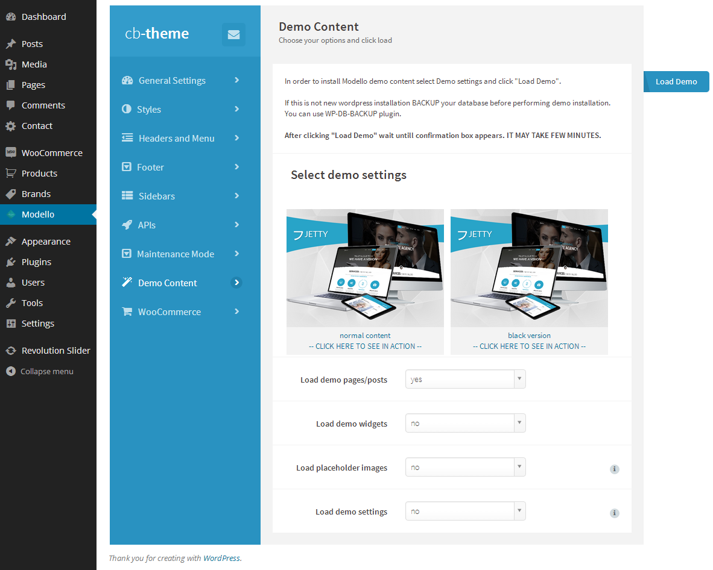
2. Select demo content by clicking on chosen image.
3. Select what you want to import:
Load demo pages/posts
will import posts, pages and products like in our demo.
Load demo widgets
you can import exactly the same widgets as you see in our demo.
Load placeholder images
this option import gray images in places where images occurs in demo.It will slow down installation.
Load demo settings
this option set default setting to theme. On first install we recommend set to yes. Will overwrite your theme settings.
4. Click Load Demo
3. Plugins
We strongly recommend you to install these plugins, they will make Modello friendlier for your users.
3.1. WP-PageNavi
it provides nice looking pagination. http://wordpress.org/extend/plugins/wp-pagenavi/
3.2. Yoast Breadcrumbs. http://wordpress.org/extend/plugins/breadcrumbs/
3.3. Contact Form 7.
3.4. Revolution Slider
free added to theme.
3.5. WooCommerce.
3.6. YITH WooCommerce Wishlist.
In order to install plugins click install plugins in the notice at the top.
4. Modello Settings
4.1. General Settings
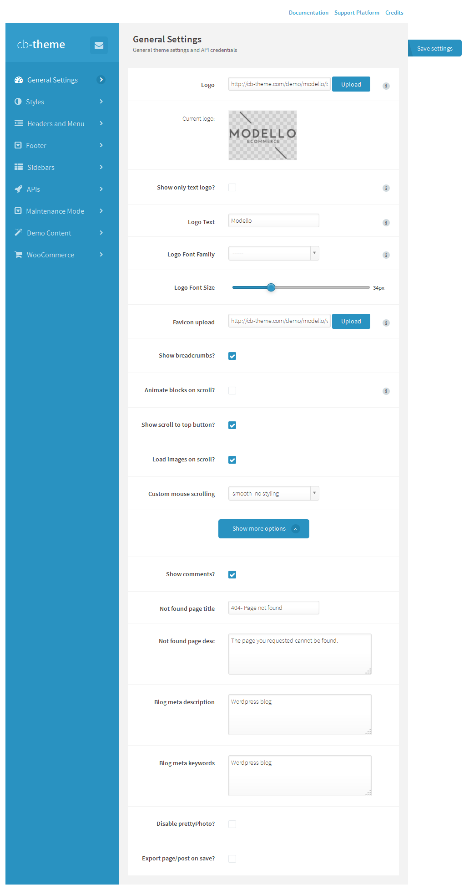
4.2. Styles
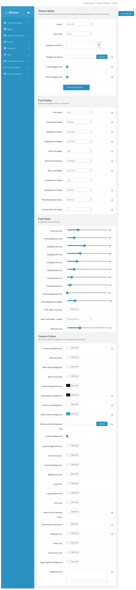
4.3. Headers and Menu
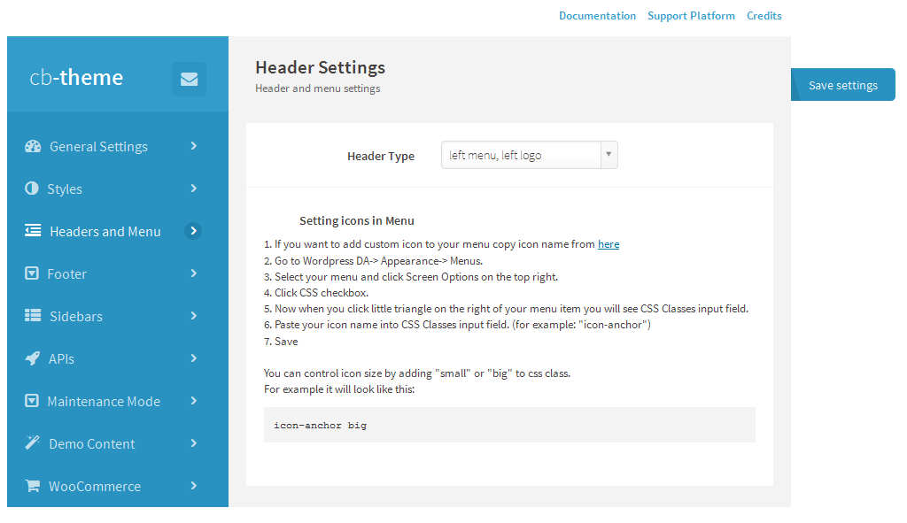
4.4. Footer
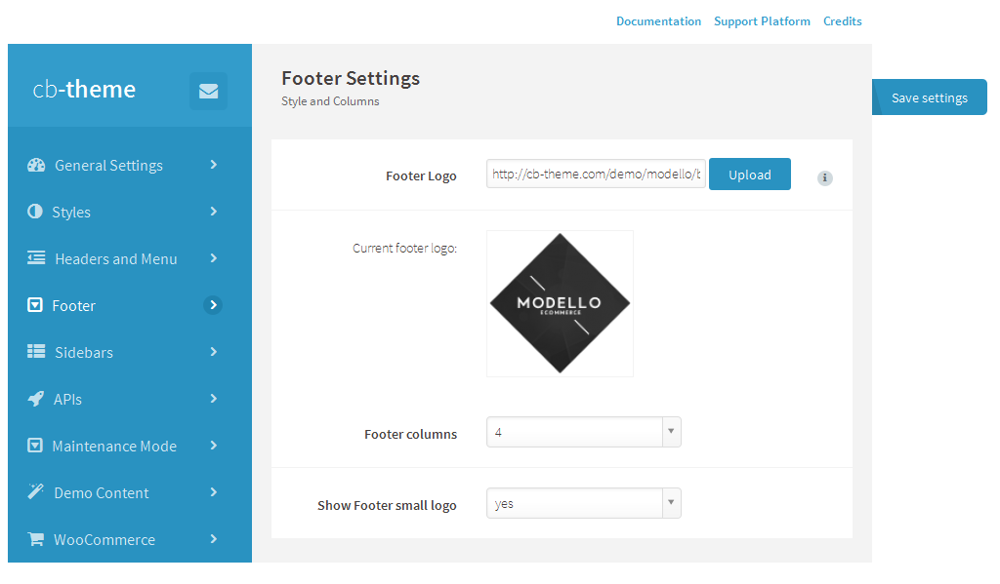
4.5. Sidebars
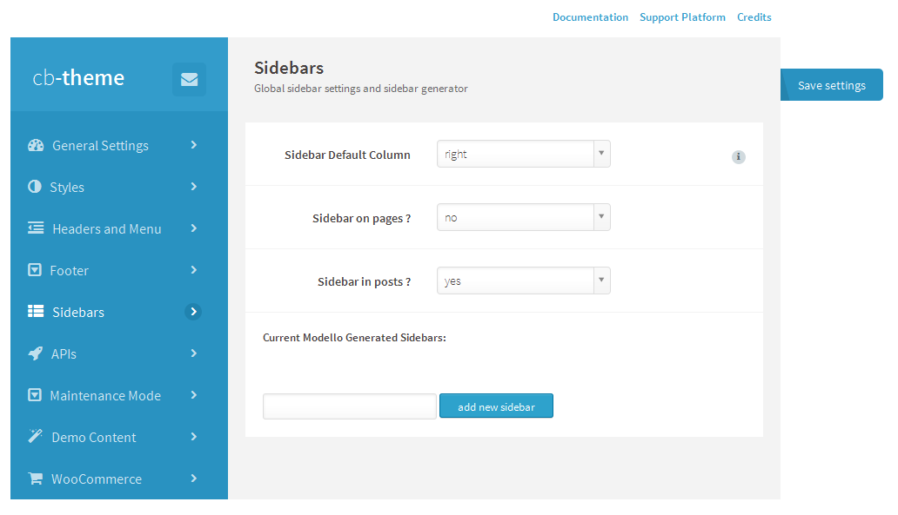
4.6. APIs
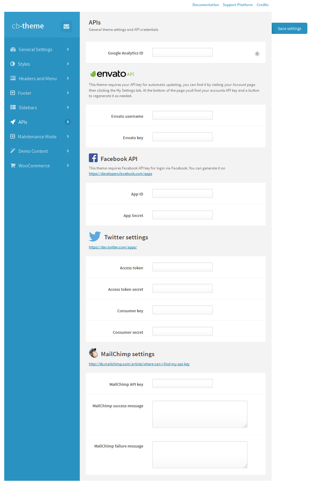
4.7. Maintenance Mode
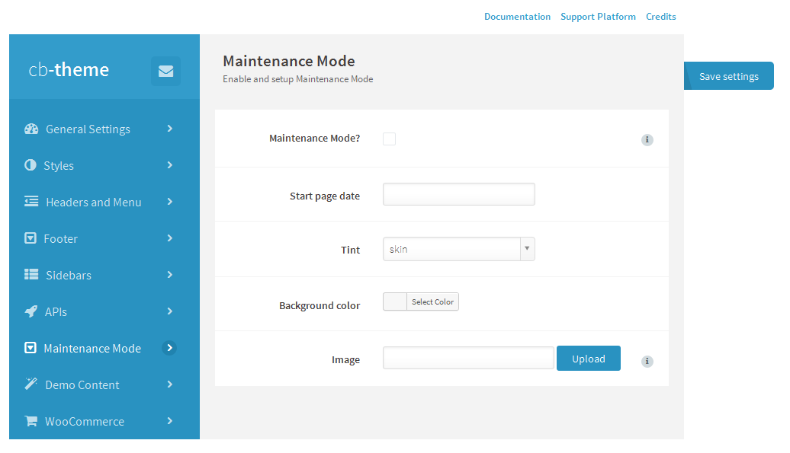
4.8. Demo Content
4.9. WooCommerce
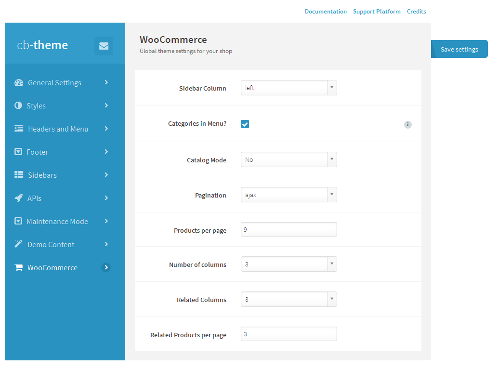
5. Page Builder
We create custom Visual Page Bulder. Drag block items from the top into content area to begin building your custom page.
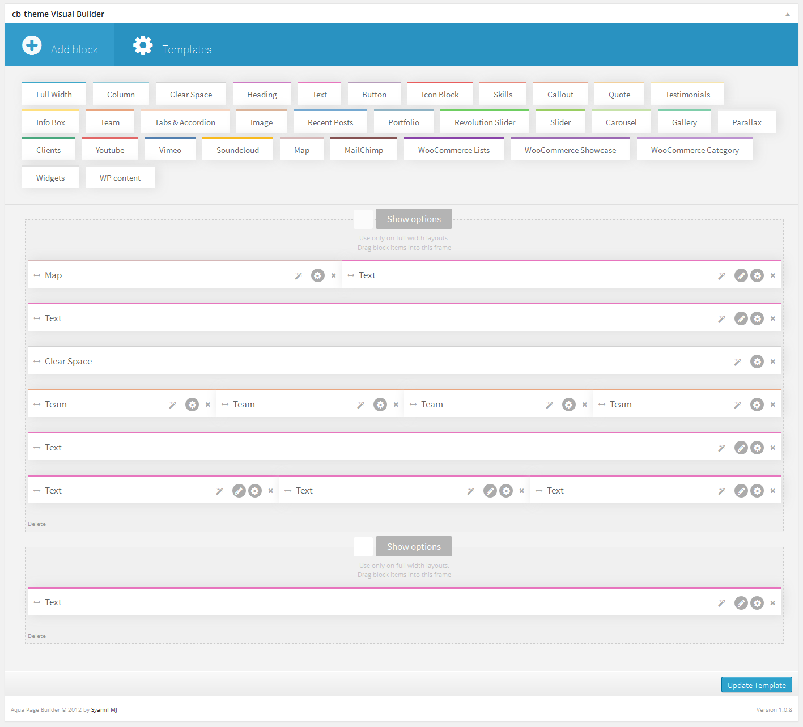
5.1. Elements
Full Width
Full width container to another blocks. You can easy change background colour and adjust size.
Column
Container with specific width. Add blocks inside to group blocks in column.
Clear Space
Simply block to insert spacer and reset floats..
Heading
Add block with easy to edit heading.Change size, colour, divider etc.
Text
Block with wysiwyg text editor.
Button
Simple, nice buttons to add.
Icon Block
Beauty icons with specific background and effects.
Skills
Percentage block to show progress.
Callout
Block with background to focus on text message.
Quote
Add text and it's look like nice quote.
Testimonials
Block to present opinions.
Info Box
Easy to show massege in error,warning, good and info style.
Team
Add image and personal data to present someone from company.
Tabs & Accordion
Insert more infos on the same space using this block.
Image
Upload and present image on your page.
Recent Posts
Select post category, change count and columns.
Portfolio
Present your gallery in this block, select category and effects.
Revolution Slider
Insert revolution slider anywhere..
Slider
Simply slider to show images in specyfic order.
Carousel
Loop images in one line.
Gallery
Upload images and show in selected order and count of columns..
Parallax
Special block to insert png images and present with parallax effect.
Clients
Insert clients logos and present in nice look.
Youtube
Add youtube video on page.
Vimeo
Add vimeo video on page.
Soundcloud
Add link and insert music player.
Map
Google Map with custom options.
Mailchimp
Integrate page with mailchimp mailing list.
WooCommerce Lists
Show woocommerce product list(hot, new, bestsellers) with ajax more load.
WooCommerce Showcase
Select category and show all products in one area with hover effect
WooCommerce Category
Select category and show product list.
Widgets
Insert any widget area.
WP content
Insert page description into page builder.
6. Page Options

7. Post Options
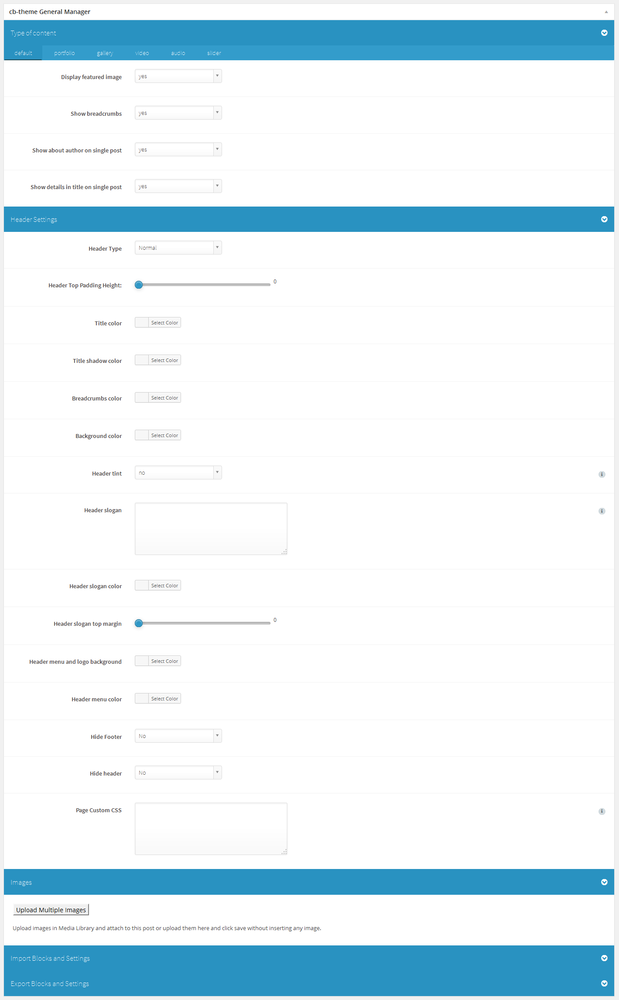
8. Support
With every problem you can contact us on http://support.cb-theme.com/.
9. FAQ
Mega Menu: If you want to change columns in mega menu after import demo content you should enable Class and Description in Scren Options(Apperance->Menu->Little triangle at top right)
Then edit menu item named column holder- in the class section you will see col23- thats 20% width column with right margin.
You can use columns like: col30,col40,col50,col60. That is 30% width, 40% etc. If you want to add some html to the menu item add it in Description area.
Slider: You can import sliders by going to Dashboard->Revolution Slider->Import Slider. Choose slider from cb-modello/docs/import.
You will see couple of zip files containing sliders. Choose one of them.
Translations: click here. - Thats from our Cosmetico Theme but its the same for Modello
Facebook/Twitter API: If you want to enable registration with Facebook and Twitter Widgets just go to Dashboard->Modello->Apis- you will find instructions there.
10. Credits
Theme and "Modello Framework" created by cb-theme.com
Scripts used in Modello:
jscolor, JavaScript Color Picker, GNU Lesser General Public License, Jan Odvarko, http://odvarko.cz, http://jscolor.com
Black & White Effect, Gianluca Guarini, http://www.gianlucaguarini.com
AnythingSlider, Chris Coyier, http://css-tricks.com
jQuery UI, http://docs.jquery.com/UI
Video.js - HTML5 Video Player, LGPL v3 LICENSE INFO, Zencoder, Inc.
prettyPhoto, Stephane Caron, http://www.no-margin-for-errors.com
jQuery Masonry, David DeSandro, MIT license, http://masonry.desandro.com
Supersized - Fullscreen Slideshow jQuery Plugin, http://www.buildinternet.com/project/supersized
Adipoli jQuery Image Hover Plugin, http://jobyj.in/adipoli
Backstretch, http://srobbin.com/jquery-plugins/backstretch/
Revolution Slider on Extended License, http://codecanyon.net/item/slider-revolution-responsive-wordpress-plugin/2751380
Aqua Page Builder base, Syamil MJ
TGM Plugin Activation, http://tgmpluginactivation.com/
Jquery Custom Scrollbar - MZubala, https://github.com/mzubala/jquery-custom-scrollbar
Caroufredsel/, http://caroufredsel.dev7studios.com
Wordpress Widget Importer/Exporter, http://wordpress.org/plugins/widget-settings-importexport/
Icons From: http://findicons.com/pack/2536/soft_media_vol_1, Pixelden.com
Icons From: http://findicons.com/pack/2446/free_icons_pack, smorge.com
Social Icons From: http://findicons.com/pack/2229/social_media_mini, Paul Robert Lloyd
Font Awesome: http://fortawesome.github.io/Font-Awesome/
Images bought for commercial use from depositphotos.com